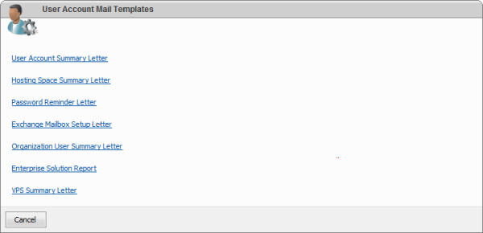

Enterprise Solution Reports configuration
Translations:
Before starting with configuration of "Enterprise Solution Report" scheduled task please ensure that from the panel under "Configuration -> System Settings" page you've configured correct SMTP server settings to allow WSP send e-mail messages.
For additional information please read following articles: Setting Up System Settings and Tuning SMTP relay for sending summary letters in WSP HES environment.
1. Configuration of "Enterprise Solution Report" template.
1.1. Login to the panel under Serveradmin or Peer user account
1.2. From the Panel home page > Mail Templates (on right bottom)

1.3. Open and configure "Enterprise Solution Report" template and fill all required information. Message body can be any you want. The only condition - it should not be empty.
2. Configuration of "Enterprise Solution Report" scheduled task.
2.1. From the Panel home page > System> Open Scheduled tasks
2.2. Add "Enterprise Solution Report" scheduled task.
2.3. Fill e-mail address. It's a person who will receive these scheduled reports.
2.4. Specify which of the reports you want to receive. By default checked all and you'll receive all reports (Exchange Report, SharePoint Report, CRM Report, and Organization Report).
Please Note: Better to schedule those reports to run every day for not to miss situation like, for example, when someone enable MAPI in the beginning of the month (after you run scheduled report) and disable in the end (before you run next report). Those people may cheat both you and MS.
Now you can receive the scheduled "Enterprise Solution Report" reports. The received e-mail message will contain attached ".CSV" file(s):
In our example body contain the "Attached are Enterprise Solution Reports", but from the report template you can set something you like (see 1.3.).
Please note: It should not be empty. It should be like an "Attached are Enterprise Solution Reports".
There is example of "exchange.csv" file:
We decided to use "csv" format because it is most simple and raw format and can be imported to virtually any database or accounting/billing program based on Access, DBF, MS SQL, MySQL, etc. So fill free to use those files with your accounting/billing databases and programs.